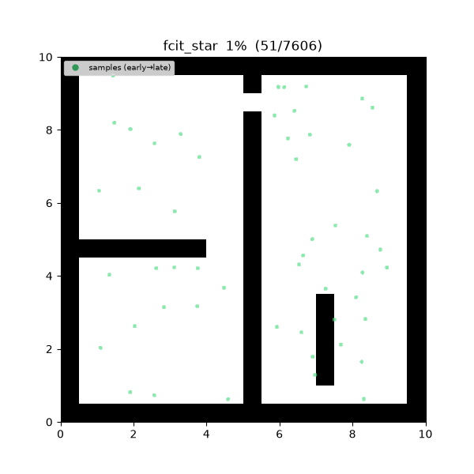
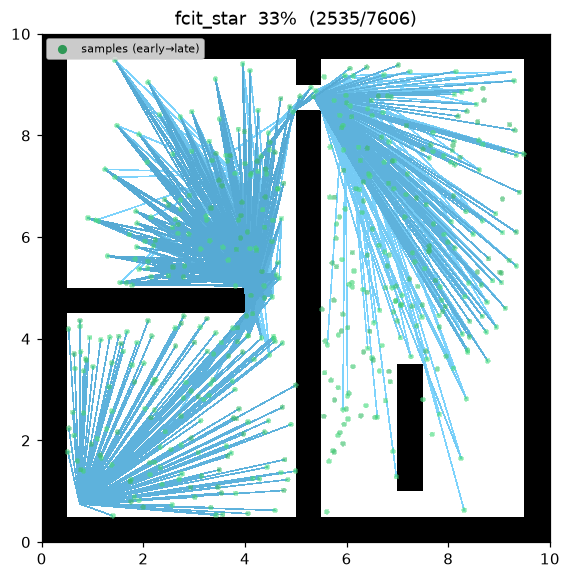
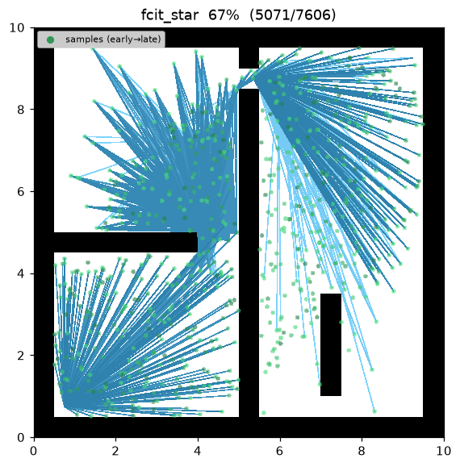
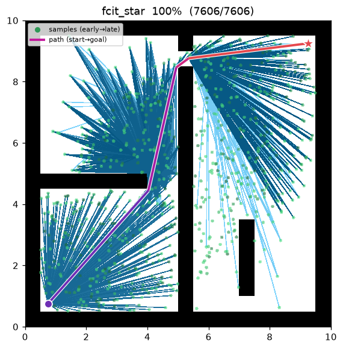
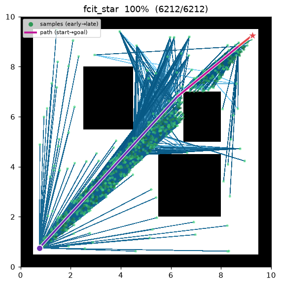

FCIT* (Fully Connected Informed Trees)¶
| Item | Description |
|---|---|
| Category | sampling-based, batch, anytime, asymptotically optimal |
| Required capability | SamplingSpace |
| Completeness | probabilistically complete |
| Optimality | asymptotically optimal — searches a fully connected graph, no radius limit |
| Complexity | O(n²) candidate edges per batch + reverse Dijkstra + lazy collision checks |
| Original paper | Wilson, Strub & Gammell (2025), ICRA 1 |
Background¶
Batch planners like BIT*, AIT*, and EIT* connect only within-radius neighbours of an RGG (\(r_n=\gamma\sqrt{\log n / n}\)) to bound the edge count. FCIT*1 inverts the premise: modern collision checking is cheap enough that there is no need to prune candidates with a radius. Instead it builds the fully connected graph over the current informed batch (every sample paired with every other) and runs an informed best-first search over it directly, with the same lazy edge validation as the radius-limited variants. Dropping the radius trades more (cheap, un-collision-checked) candidate edges for a search that can take shortcuts a radius graph would miss.
The heuristic reuses AIT*'s reverse-search heuristic idea (Strub & Gammell 20202): a Dijkstra from the goal (over the complete graph) gives each vertex an estimated cost-to-go \(\hat h\). Once a solution exists, later batches draw from the informed ellipse (Gammell et al. 20143) to concentrate on the region that can still improve. It is an anytime algorithm, tightening the path across batches.
How It Works¶
Search on maze01. Because every accumulated sample connects to every other, the graph fills in
densely batch by batch instead of growing a single incremental tree, and the path tightens as new
batches arrive.

Intermediate search progress (left → right: early / middle / final path):
 |
 |
 |
Final result on open01 — the complete graph contains the direct start-goal edge, so the very
first batch already connects an almost-straight-line path:

points[0]=start, points[1]=goal. Per batch:
- Grow the batch. Draw
batch_sizeinformed-ellipse samples, keep the valid ones, append to a persistent point array. - Fully connected adjacency. For every accumulated sample,
nbr[i] = { j ≠ i }— no radius restriction. Only a persistentinvalid_edgesset (normalised undirected pairs), which accumulates motions found in collision, is filtered out. - Reverse search. Run Dijkstra from the goal over that filtered complete graph to obtain \(\hat h\) for every vertex.
- Forward search. A lazy-deletion best-first (A*) ordered by \(g+\hat h\). Each considered edge is
validated late with
is_motion_valid(on collision, add toinvalid_edgesand skip); accept it when it improves \(g[x]\) (edge_addedon first connection,rewireon improvement). When the goal improves, update \(c_{\text{best}}\) and emitpath_found.
FCIT_STAR(start, goal):
points ← [start, goal]; invalid ← ∅; c_best ← ∞
for batch in 1..max_batches:
points ← points ∪ draw(batch_size, c_best) # informed batch (once a solution exists)
nbr[i] ← { j ≠ i : (i,j) ∉ invalid } # fully connected (no radius)
h_hat ← DIJKSTRA_from_goal(nbr, distance) # reverse search: adaptive heuristic
g[start] ← 0; open ← {start} # forward A* (rebuilt each batch)
while open ≠ ∅:
v ← pop_min(open, key = g[v] + h_hat[v])
if closed[v]: continue
close v
if v = goal: break # goal settled → end this batch
for x in nbr[v]:
if closed[x]: continue
t ← g[v] + ‖v−x‖
if t ≥ g[x]: continue # cannot improve x through v
if (v,x) ∈ invalid: continue
if not is_motion_valid(v, x): # lazy validation (only here)
invalid ← invalid ∪ {(v,x)}; continue
g[x] ← t; parent[x] ← v; push(open, x)
if x = goal and g[goal] < c_best:
c_best ← g[goal] # incumbent improved
return path(goal)
\(\hat h(v)\) is the shortest \(v{\to}\)goal distance in the complete graph. This lower-bounds the true collision-free cost-to-go (it is over a superset of the validated edges), so it is admissible; being a shortest-path metric it is also consistent for the forward search — \(\hat h(v)\le\lVert v-x\rVert+\hat h(x)\) holds for any edge \((v,x)\) by the triangle inequality. Hence A* without re-expansion returns the optimal path over this batch's graph.
On open space the complete graph contains the direct start–goal edge, so the forward search connects the straight-line path in the first batch — the cost is essentially the straight-line lower bound.
Properties¶
- Completeness: probabilistically complete1.
- Optimality: asymptotically optimal. As batches accumulate the samples densify and informed samples concentrate in the solution region, converging to the optimum.
- Anytime: after the first solution, later batches keep tightening the path. On exhausting
max_batchesit returns the current best. - Exploits cheap collision checking: by dropping the radius restriction it searches a denser graph than the radius-limited BIT*/AIT* lineage, at the cost of more (deferred/lazy) candidate edges per batch.
Implementation Simplification¶
The scope is deliberately reduced versus the full paper:
- The reverse search is recomputed from scratch each batch rather than repaired incrementally, and
likewise the forward tree (\(g\),
parent, open-heap) is rebuilt fresh every batch. Only \(c_{\text{best}}\) andinvalid_edgespersist across batches, and both only improve/grow monotonically. - The sample budget is kept modest: the complete graph has O(n²) edges, so this implementation caps the accumulated sample count to a few hundred. The paper develops a more sophisticated scheme for keeping eager all-pairs evaluation cheap at scale, which this implementation does not reproduce.
These reductions leave the core mechanism — a fully-connected informed-batch graph plus adaptive lazy-validated best-first search — intact, omitting only the scale-up machinery.
Parameters¶
| Name | Type | Default | Range | Description |
|---|---|---|---|---|
batch_size |
int | 80 | [1, 100000] | Number of new (informed) samples drawn per batch; kept small since the graph is fully connected (O(n²) edges) |
max_batches |
int | 10 | [1, 10000] | Maximum number of batches (anytime — current best returned when exhausted) |
seed |
int | 1 | [0, 2^31−1] | Random seed (reproducibility) |
There is no gamma parameter (BIT*/PRM*) because a fully connected graph has no radius policy.
Emitted Trace Events¶
planning_started → sample_drawn* → candidate_evaluated* → edge_added* → rewire* → path_found* → planning_finished
sample_drawn marks a per-batch sample, candidate_evaluated an edge the forward search considered
(one that could still improve a vertex), edge_added a first connection, rewire a re-connection via
a cheaper route, and path_found is emitted each time \(c_{\text{best}}\) improves (a new best
solution).
References¶
-
Wilson, T., Strub, M. P., & Gammell, J. D. (2025). "Fully Connected Informed Trees (FCIT*): Fast, informed, asymptotically optimal sampling-based planning by exploiting cheap collision checking." Proc. IEEE International Conference on Robotics and Automation (ICRA). DOI placeholder (2025 ICRA proceedings; not independently verified here):
10.1109/ICRA.2025.XXXXXXX. ↩↩↩ -
Strub, M. P., & Gammell, J. D. (2020). "Adaptively Informed Trees (AIT*): Fast asymptotically optimal path planning through adaptive heuristics." Proc. IEEE ICRA, 3191–3198. doi:10.1109/ICRA40945.2020.9197338 · PDF (arXiv) ↩
-
Gammell, J. D., Srinivasa, S. S., & Barfoot, T. D. (2014). "Informed RRT*: Optimal sampling-based path planning focused via direct sampling of an admissible ellipsoidal heuristic." Proc. IEEE/RSJ IROS, 2997–3004. doi:10.1109/IROS.2014.6942976 · PDF (arXiv) ↩